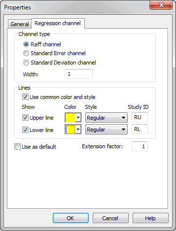
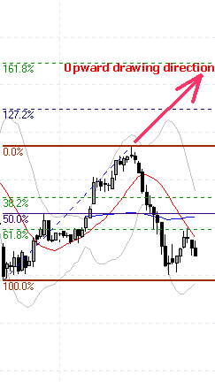
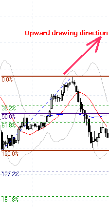
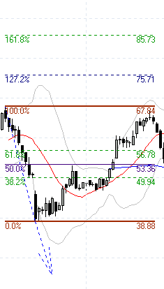
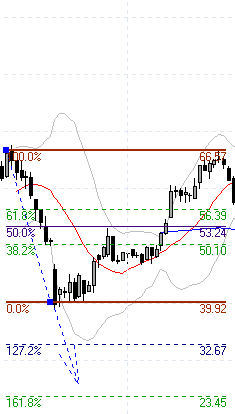
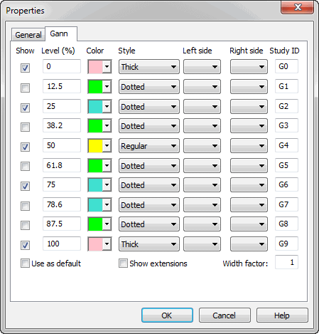

Study Drawing Tools
AmiBroker's study drawing tools are accessible from Draw / Fibonacci & Gann toolbars:
 |
The following tools are available:
- Trendline
- Ray (new in 4.20)
- Extended Line (new in 4.20)
- Vertical Line
- Horizontal Line
- Parallel Lines (new in 4.20)
- Regression Channels: Raff, Standard Deviation, Standard Error (all
new in 4.20)
- Fibonacci Retracement Study (enhanced in 4.20)
- Fibonacci Time Zones Study
- Fibonacci Extensions (new in 4.60)
- Fibonacci Time Extensions (new in 4.60)
- Fibonacci Fan
- Fibonacci Arc
- Gann Square (new in 4.20)
- Gann Fan (new in 4.20)
- Ellipse Tool
- Triangle Tool (new in 4.30)
- Andrews' Pitchfork (new in 4.30)
- Cycles Tool (new in 4.60)
- Arrow Tool (new in 4.70)
- Zig-Zag Tool (new in 4.70)
- Arc Tool
- Rectangle
- Text Box Tool
The default Select tool (red arrow) is used to select drawing
objects and quotations on the chart. If you want to draw a given study, just
switch on the appropriate button and start drawing on the chart by pointing
the mouse where you want to start the drawing and click and hold the left
mouse button. Then move the mouse. A study tracking line will appear. Release
the left mouse button when you want to finish drawing. You can also cancel
study drawing by pressing the ESC (escape) key. For a beginner's guide to charting,
check Tutorial: Charting Guide
|
Trendline, Ray, Extended Line, Vertical Line, Horizontal Line
These tools give different flavors of basic trendline. A Trendline gives a
line segment, a Ray gives a right-extended trendline, an Extended Line gives a trendline
that is extended automatically from both left and right sides. Vertical Line and
Horizontal Line are self-explanatory.
Arrow Tool
Similar to a Trendline but ends with an arrow.
Zig-Zag Tool
Draws a series of connected trendlines. To end drawing, press the ESC key.
Parallel Lines
This tool allows you to draw a series of parallel trendline segments. First, you
draw a trendline as usual; then, a second line parallel to the first is automatically
created, and you can move them around with the mouse. Once you click on the chart,
it is placed in the given position. Then another parallel line appears that can
be placed somewhere else. And again, and again. To stop this, please either press
the ESC key or choose "Select" tool.
Regression Channels
AmiBroker allows you to easily draw three kinds of Regression Channels:
- Raff Regression Channel
- Standard Error Channel
- Standard Deviation Channel
All these channels are based on a linear regression trendline.
The Regression Channel is constructed by plotting two parallel, equidistant
lines above and below a linear regression trendline. The distance between the
channel lines to the regression line is the greatest distance that any one high
or low price is from the regression line.
Standard Error Channels are constructed by plotting two parallel lines above
and below a linear regression trendline. The lines are plotted a specified number
of standard errors away from the linear regression trendline.
Standard Deviation Channels are constructed by plotting two parallel lines
above and below a linear regression trendline. The lines are plotted a specified
number of standard deviations away from the linear regression trendline.
You can choose the type of channel by double-clicking on the channel study
(or choosing Properties from the right mouse button menu)

If the Use common color and style box is marked, channel lines use the same
style and color as the regression (middle) line. If it is not marked, you can set
separate colors and styles for upper and lower channel lines. You can also completely
switch off upper and lower channel lines by unticking Show Upper line
and Show Lower line boxes.
"
Study ID" column defines a study identifier that can
be used in your custom formulas to detect crossovers. You can change
these IDs if required by simply editing these fields. For more information on
Study IDs, check
Tutorial: Using Studies in AFL FormulasMore information on Regression Channels is available from Technical
Analysis Guide.
Ellipse and Arc Drawing Tools
These new drawing tools are connected to the date/price coordinates (like trendlines)
rather than to the screen pixels, so they can change the visual shape when displayed at various zoom factors or screen sizes.
To see the properties of these elements, you should double-click on the clock-like
3, 6, 9, or 12 o'clock positions.
Fibonacci Arc
This new drawing tool generates standard Fibonacci arcs that are controlled
by the trendline drawn with a dotted style. To see the properties of the arcs,
click on the controlling trendline.
Note that the arc radius and central point are relative to the controlling trendline. Because Fibonacci arcs must be circular regardless of screen size/resolution and zoom factor, the position of the arcs may move in the date/price domain.
Fibonacci Retracement
First, please note that the Fibonacci tool works differently depending on
the direction of drawing and the "show extensions" flag. See the pictures
below.
 |
 |
Upward drawing direction
Show Extensions ON |
Upward drawing direction
Show Extensions OFF |
As you can see, it shows both retracement levels (38.2, 50, 61.8) and extension
levels (127.2, 161.8). If the "show extensions" box is OFF, the tool
shows ONLY retracement levels. It works in a similar way when the controlling trendline
is drawn downwards.
 |
 |
Downward drawing direction
Show Extensions ON |
Downward drawing direction
Show Extensions OFF |
Now, more about the Fibonacci settings window:
The first column, "Show", switches a particular line ON/OFF.
The second column, "Level (%)", defines the percentage level. 100
and 0 represent the Y-coordinate
of the begin and end points of the controlling trendline.
The third column, "Color", defines the color of the line. The fourth column,
"Style", allows
to choose between regular, thick, and dotted styles.
The fifth and sixth columns, "Left side" and "Right side", control the display of text
that appears on the left and right side of the Fibonacci level line.
"Empty" means no text,
% means percentage level, $ means dollar (point) level.
The seventh column, "Study ID", defines a study identifier
that can be used in your custom formulas
to detect crossovers. Each Fibonacci level has a separate ID by default, F0... F9.
You can change these IDs if required by simply editing these fields.
As described in the User's Guide: Tutorial: Using Studies in AFL Formulas
you can easily write the formula that checks for penetration of a particular Fibonacci level.
In this example, we will detect if the closing price drops below the F2 (38.2%
retracement) level line. The formula is very simple:
sell = cross( study( "F2" ), close );
Note that the study() function accepts two arguments: the first is a StudyID two-letter
code that corresponds to one given in the properties dialog; the second argument
is chart ID. By default, it is 1 (when it is not given at all), and then it references
the studies drawn in the main price pane. For checking studies drawn in other
panes, you should use the codes given above (in the table describing the study()
function).
Please note that this formula is universal; it will use the appropriate level
from any symbol that has Fibonacci lines drawn.
This is so because AmiBroker keeps data of all studies drawn in its
database.
When you scan using the above code, AmiBroker checks if Fibonacci levels are drawn for the symbol being currently scanned;
if it finds one, it looks at what F2 study is. It finds that this is a Fibonacci
line 38.2% located (for example, for a particular symbol) at $29.06
so AmiBroker internally substitutes study( "F2" ) with $29.06 (caveat:
this is a simplification; in fact, it internally generates an array that represents
a trendline) and checks for a cross.
"Extension factor" decides how far lines are right-extended
(in X-axis direction). If you enter 2, you will get lines extended twice as much
as the default '1'. If you enter 0, Fibonacci level lines will end where the controlling trendline
ends.
"Use as default" - if you check this box and accept the
settings by clicking OK, all Fibonacci drawings that
you will draw later will use these settings.
When using the Text Box Tool, just type the text in the box. When you want to finish,
click outside the text box. You can also cancel editing by pressing the ESC key.
Fibonacci Extensions
The Fibonacci Extensions tool is similar to the Fibonacci Retracements tool.
The Fibonacci Extensions tool requires a third point. The extensions and
retracement levels are drawn from this third point, but based on the distance
between the first two points. A common use of this tool is to first connect
two points that represent the endpoints of a major trend (or wave). Then, choose
the third point to be the endpoint of a retracement of that trend. Extensions
are then drawn in the direction of the initial trend, from the third point,
using the distance between points one and two as a basis for the extension
levels.
The Fibonacci Extensions toolbar button and drawing tool work much like the
Andrews' Pitchfork drawing tool. First, click on the Fibonacci Extension button
on the toolbar. Then, click three times, once on each of the points that are
involved in the Fibonacci Extension. The first click should be on the starting
point of the initial trendline. The second click should be on the ending point
of the initial trendline. The third click should be on the ending bar of the
retracement period.
As with Fibonacci Retracements, there is a great deal of flexibility via the Fibonacci
settings tab available after clicking on the study with a right mouse button and selecting
"Properties" from the context menu.
Fibonacci Time Extensions
The Fibonacci Time Extensions tool is used to specify vertical lines at date/time
levels which are determined to be probable values of changes in trend, based
on the
market’s previous date/time range and a third extension point.
The time extension tool should be used as follows. First, click on the Fibonacci
Time Extension button on the toolbar. Then, select the first range point (typically
a major top or bottom of a market) by clicking on the chart where you want
the range to begin; then, move the mouse pointer to select the second range
point by again clicking on the chart where you want the range to end. Extension
lines will now be drawn onto the future bars.
As in
Fibonacci Price Retracement and Extensions tools, you have complete control
over which percentages are used in the Time Extensions tool,
and the colors of each of the extension values via the Properties dialog.
Gann Square and Gann Fan
Gann Squares indicate possible time and price movements from important highs
and lows. To draw a Gann Square on a chart, move the cursor on the chart to the
starting point. The starting point is generally an important high or low on
the chart. Then drag the mouse to the right until a desired ending point is
reached. The start and end points will be the corners of the square. The ending
point is often to the right of the chart bars. Watch for trends to change directions
at the Gann Square levels. As the Gann Square is drawn to the screen, the angle
of the controlling trendline is shown in the status bar.
Properties Window

The properties window is used to change the square levels, color, style, thickness,
and defaults. Click on any of the Gann Square Show entries to add or
remove lines. Click in the square Color box to change the line color.
Click on Style combo boxes to change the line style. Check the Use
as Default box to save the settings as the default for all subsequent Gann
Squares that are drawn. The "Left side" and "Right side" columns
control the display of text that appears on the left and right side of
the Gann lines. "Empty" means no text, % means percentage level, $ means dollar (point) level. "Study ID" column defines a study
identifier that can be used in your custom formulas to detect crossovers.
You can change these IDs if required by simply editing these fields. For more
information on Study IDs, check Tutorial: Using Studies
in AFL Formulas
Triangle Tool
The Triangle Tool is self-explanatory. Drawing a triangle is easy: left-click
at the first point, hold down and drag to the second point,
then
release the mouse
button and drag to the third point and click once. The controlling triangle
will become the pitchfork.
Andrews' Pitchfork
Andrews' Pitchfork is a study using parallel trendlines. In constructing the
study, starting points are chosen. The first is a major peak or trough on the
left
side of the chart display.
The second and third starting points are chosen to be a major peak and a major
trough to the right of the first point. After
all starting points have been decided, AmiBroker draws a trendline from the
first
point
(the most
left)
so
that it passes directly between the rightmost points. This line is called
the handle
of the
pitchfork. The second and third trendlines are drawn by AmiBroker beginning
at the starting points and parallel to the handle. Dr. Andrews suggested that
prices
make it
to the median line (or handle) about 80% of the time while the price trend
is in place. This means that while the basic long-term price trend remains
intact, Dr. Andrews believed that the smaller trends in price would gravitate
toward the median line while the larger price trend remained intact. When
that does not occur, it may be evidence that a reversal in the larger price
trend may be in progress or provides evidence of a stronger bias at work in
the market. When price fails to make it to the median line from either side,
it is often an expression of the relative enthusiasm of buyers and sellers and
may predict the next major direction of prices. If prices fail to reach the
median line while above the median line, it is bullish, and failing to reach
the median line from below is bearish.
Operating Andrews' Pitchfork tool is similar to drawing a triangle. Left-click
at the first point, hold down and drag to the second point, then release the mouse
button and drag to the third point and click once. The controlling triangle
will become the pitchfork.
Cycles Tool
To use the Time Cycles Tool, click
on the cycles drawing tool button in the toolbar; then, click at the starting
point of the cycle and drag to the end of the cycle. These two control points
control
the interval between the cycle lines. When you release the mouse button,
you will get a series of
parallel lines with equal intervals between them.